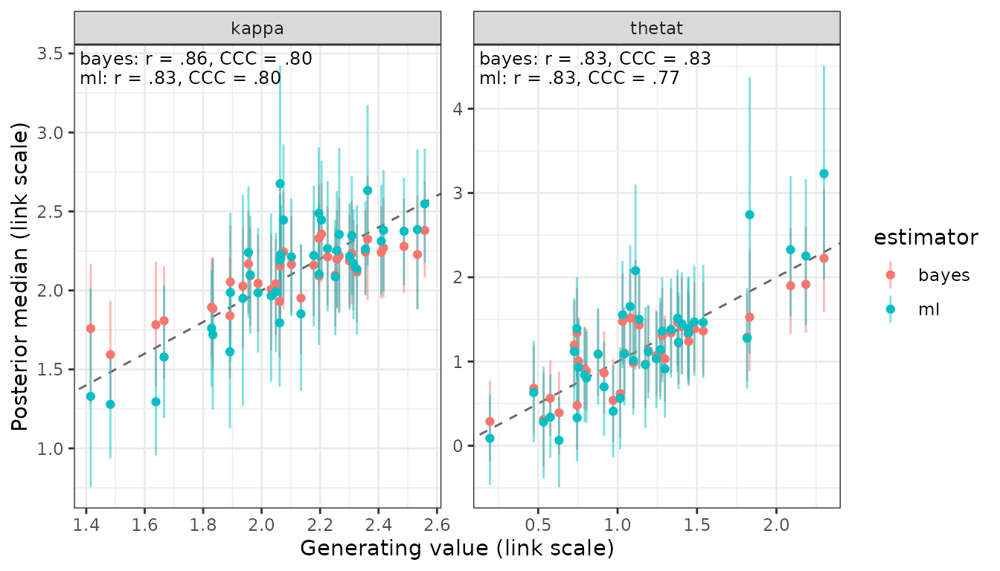
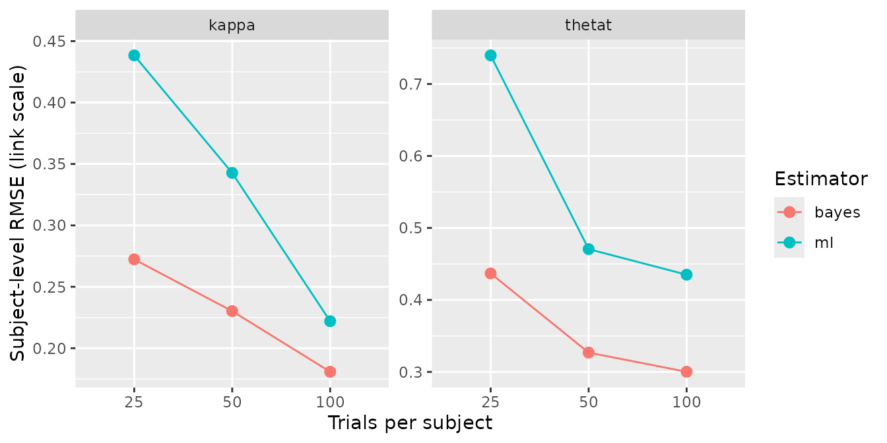

Hierarchical estimation against subject-wise maximum likelihood
Source:vignettes/articles/hierarchical-vs-ml.Rmd
hierarchical-vs-ml.RmdA hierarchical model estimates each subject partly from that subject’s own data and partly from everyone else’s. That this buys accuracy is easy to assert and rarely measured on the model in front of you. This article measures it for one bmm model: the same simulated data fitted twice, once hierarchically and once subject by subject with no pooling, and scored once against the generating values that produced it.
fit_ml() is the second fit. It exists for this
comparison and not for inference: bmm’s own discussion of subject-wise
maximum likelihood records the wish that users not apply it for
inference, and bmmtools does not recommend it either. What it is good
for is a baseline, and a baseline is what turns “hierarchical estimation
helps” into a number.
The comparison is the one Recovery summary columns works through algebraically for a conjugate normal model. Here the same quantities come out of a real bmm model, a real sampler and the package’s own scorers.
The data
The data set is the one Validating a new bmm
model walks through: mixture2p, 40 subjects, 100 trials
each, subjects drawn around a population value on the link scale.
Two fits of it
The hierarchical fit gives every free parameter a random intercept
over id, which is what recovery_formula()
writes:
fit <- fit_cached(
recovery_formula(model), sim$data, model,
file = file.path(fits_dir, "mixture2p-40x100"),
seed = 1, chains = 4, iter = 2000, cores = 4, backend = "cmdstanr"
)
check_convergence(fit)
bayes <- extract_estimates(fit, level = "subject")#> # A tibble: 1 × 8
#> max_rhat min_ess_bulk min_ess_tail n_divergent n_max_treedepth n_variables pass failed
#> <dbl> <dbl> <dbl> <int> <int> <int> <lgl> <chr>
#> 1 1.01 970. 1786. 0 0 86 TRUE ""fit_ml() takes the hierarchy out. It writes
p ~ 0 + id instead, so each subject gets an independent set
of parameters and nothing is shared between them:
ml <- fit_ml(
model, sim$data,
file = file.path(fits_dir, "ml-mixture2p-40x100"),
seed = 1, refresh = 0, silent = 2
)
ml#> <bmmtools_ml>
#> 40 cells by id, 40 converged.
#> Method: stan/laplace, flat priors.
#> 2 parameters: kappa, thetat.
#>
#> # A tibble: 80 × 13
#> term estimate ci_low ci_high ci_method ci_level rhat ess_bulk ess_tail level id
#> <chr> <dbl> <dbl> <dbl> <chr> <dbl> <dbl> <dbl> <dbl> <chr> <chr>
#> 1 kappa 1.61 1.13 2.09 laplace 0.95 NA NA NA subject 1
#> 2 kappa 1.85 1.36 2.29 laplace 0.95 NA NA NA subject 2
#> 3 kappa 1.76 1.39 2.13 laplace 0.95 NA NA NA subject 3
#> 4 kappa 2.55 2.17 2.90 laplace 0.95 NA NA NA subject 4
#> 5 kappa 2.22 1.77 2.66 laplace 0.95 NA NA NA subject 5
#> 6 kappa 1.72 1.25 2.20 laplace 0.95 NA NA NA subject 6
#> 7 kappa 2.26 1.87 2.69 laplace 0.95 NA NA NA subject 7
#> 8 kappa 2.22 1.88 2.55 laplace 0.95 NA NA NA subject 8
#> 9 kappa 2.09 1.72 2.45 laplace 0.95 NA NA NA subject 9
#> 10 kappa 1.99 1.61 2.40 laplace 0.95 NA NA NA subject 10
#> # ℹ 70 more rows
#> # ℹ 2 more variables: converged <lgl>, estimator <chr>Two things about that fit are what keep it a fair opponent rather than a straw man.
The priors are flat. Under bmm’s default priors the
mode of a no-pooling fit is a penalised estimate, and the comparison
would become hierarchical shrinkage against prior shrinkage, which is a
different and much weaker claim. prior = "default" is
available and documented as what it is.
It is one fit, not forty. Under
p ~ 0 + id every free parameter belongs to a single
subject, so the log posterior is a sum of per-subject terms and the
joint mode is the vector of per-subject modes. ?fit_ml
reports the check: the joint mode and independent optimisation of bmm’s
own density agreed to 3.0e-06 on the link scale.
One truth, two estimators
There is no compare_estimators(). Both fits produce an
estimates tibble with the same columns, the rows carry an
estimator column, and binding them is the join:
#>
#> kappa thetat
#> bayes 40 40
#> ml 40 40recover_subjects() then scores all 160 rows against the
one set of generating values, and summary() groups by
estimator instead of pooling the two into a single bias and
RMSE:
scored_link <- recover_subjects(both, sim$truth$subjects, scale = "link")
summary(scored_link)#> # A tibble: 4 × 8
#> term estimator n bias rmse coverage ci_width r
#> <chr> <chr> <dbl> <dbl> <dbl> <dbl> <dbl> <dbl>
#> 1 kappa bayes 40 -0.00296 0.143 1 0.668 0.858
#> 2 thetat bayes 40 -0.0237 0.260 0.975 1.08 0.830
#> 3 kappa ml 40 -0.00295 0.193 1 0.855 0.829
#> 4 thetat ml 40 0.0424 0.385 0.925 1.33 0.829
#> # A tibble: 4 × 7
#> term estimator r ccc ccc_scale_shift calibration_slope truth_sd
#> <chr> <chr> <dbl> <dbl> <dbl> <dbl> <dbl>
#> 1 kappa bayes 0.858 0.797 0.680 1.26 0.263
#> 2 thetat bayes 0.830 0.827 0.936 0.887 0.457
#> 3 kappa ml 0.829 0.800 1.31 0.635 0.263
#> 4 thetat ml 0.829 0.772 1.45 0.571 0.457That is one summary() object, printed twice over
different columns; all 23 are defined in Recovery
summary columns.
scale = "link" is deliberate here. The link scale is the
one the model is estimated on and the one the shrinkage argument is
about; the natural scale comes back below, and it does not tell the same
story.
What the table says
RMSE falls and the correlation does not.
Subject-level RMSE goes from 0.193 to 0.143 on kappa and
from 0.385 to 0.260 on thetat, while r moves
from 0.829 to 0.858 and from 0.829 to 0.830. This is the shape the
conjugate table in Recovery summary columns
shows with exact posterior means: the same ordering of subjects,
recovered with less error.
They differ far more in spread than in rank.
ccc_scale_shift is the standard deviation of the estimates
over the standard deviation of the truth. Printed rather than
inferred:
spread <- dplyr::summarise(
scored_link,
sd_estimate = sd(estimate, na.rm = TRUE),
sd_truth = sd(true_value, na.rm = TRUE),
ratio = sd(estimate, na.rm = TRUE) / sd(true_value, na.rm = TRUE),
.by = c(term, estimator)
)
spread#> # A tibble: 4 × 5
#> term estimator sd_estimate sd_truth ratio
#> <chr> <chr> <dbl> <dbl> <dbl>
#> 1 kappa bayes 0.181 0.266 0.680
#> 2 thetat bayes 0.433 0.463 0.936
#> 3 kappa ml 0.347 0.266 1.31
#> 4 thetat ml 0.672 0.463 1.45The maximum-likelihood estimates spread wider than the subjects they estimate, because each one carries its own measurement error and nothing pulls it back. The hierarchical estimates spread narrower, because each is pulled towards the population mean by an amount the model infers from how noisy that subject’s data are.
ccc does not settle it, and that is a property
of ccc. On kappa Lin’s concordance is
0.800 for maximum likelihood against 0.797 for the hierarchical fit, the
wrong way round from the RMSE. Lin’s bias-correction factor treats a
scale shift of \(v\) and one of \(1/v\) alike, so \(\rho_c\) cannot distinguish calibrated
shrinkage from none and mildly rewards too little of it. Recovery summary columns
derives this for the conjugate case, where it shows up as .691 against
.657; here it survives contact with a real model. Read ccc
next to rmse, never instead of it.
One replication is a coarse instrument for
calibration_slope. For a calibrated posterior mean
the slope of truth on estimate is 1. Measured here it is 1.262 on
kappa and 0.887 on thetat, against 0.635 and
0.571 for maximum likelihood. The direction is unambiguous and the
distance from 1 is not: the slope is \(r /
v\), and both are estimated from 40 subjects in a single
simulated data set. The design grid below is where that number becomes
readable.
A warning that applies to the whole table.
ccc_scale_shift near 1 is not the target
for the hierarchical estimator. A calibrated posterior mean has \(v = r\), not \(v
= 1\); calibration_slope \(= r/v\) is the column to read against 1.
This is documented in ?recovery_ccc and derived in Recovery summary
columns.
plot_recovery(scored_link, color_by = "estimator", annotate = TRUE)
Both clouds sit on the identity line. The maximum-likelihood cloud is longer along it and its intervals are wider.
On the scale a reader interprets
The link scale is the honest one for comparing estimators. It is not
the one results are reported on. kappa is a concentration
and thetat a probability, and the hierarchical fit records
its own link table while a fit_ml() result does not, so
scoring a bound tibble on the natural scale needs the links
supplied:
par_table <- bmm::parameters(model)
links <- stats::setNames(par_table$link, par_table$parameter)
links#> mu1 kappa thetat
#> "tan_half" "log" "logit"
scored <- recover_subjects(both, sim$truth$subjects, links = links)
summary(scored)#> # A tibble: 4 × 8
#> term estimator n bias rmse coverage r calibration_slope
#> <chr> <chr> <dbl> <dbl> <dbl> <dbl> <dbl> <dbl>
#> 1 kappa bayes 40 -0.172 1.24 1 0.821 1.23
#> 2 thetat bayes 40 -0.00306 0.0480 0.975 0.815 0.815
#> 3 kappa ml 40 0.155 1.77 1 0.744 0.587
#> 4 thetat ml 40 -0.00177 0.0620 0.925 0.816 0.605bias on kappa is where the two scales part
company. On the link scale both estimators are near-unbiased, -0.0029
and -0.0030. On the natural scale they are biased in opposite
directions, 0.155 for maximum likelihood and -0.172 for the hierarchical
fit.
Nothing has gone wrong; this is Jensen’s inequality and the spread
column above. kappa has a log link and exp()
is convex, so the mean of the transformed estimates depends on their
spread as well as their centre. The unpooled estimates spread 1.31 times
as wide as the truth and come out too high; the shrunk ones spread 0.68
times as wide and come out too low. RMSE still prefers the hierarchical
fit on this scale, 1.24 against 1.77. Report the scale next to the
number, and read bias on the scale the model was estimated on.
What maximum likelihood cannot be scored on
The hierarchical fit also estimates the population, and there is nothing in the no-pooling fit to compare it against:
recover(fit, sim$truth$population, level = "population")#> <bmmtools_recovery>
#> Scored on the natural scale.
#> 1 fit, 2 parameters: kappa, thetat.
#> Level: population.
#>
#> # A tibble: 2 × 23
#> term estimator level scale n n_replications n_converged bias rmse
#> <chr> <chr> <chr> <chr> <dbl> <int> <int> <dbl> <dbl>
#> 1 kappa bayes population natural 1 1 1 0.188 0.188
#> 2 thetat bayes population natural 1 1 1 0.00710 0.00710
#> coverage ci_width r r_low r_high rank_r ccc ccc_low ccc_high ccc_accuracy
#> <dbl> <dbl> <dbl> <dbl> <dbl> <dbl> <dbl> <dbl> <dbl> <dbl>
#> 1 1 1.76 NA NA NA NA NA NA NA NA
#> 2 1 0.0699 NA NA NA NA NA NA NA NA
#> ccc_scale_shift ccc_location_shift calibration_slope truth_sd
#> <dbl> <dbl> <dbl> <dbl>
#> 1 NA NA NA 0
#> 2 NA NA NA 0
#>
#> r, rank_r and ccc are NA where they are not estimable: they need at least 3 complete pairs and spread on both sides.With one fit there is one estimate per parameter, so
rmse is the absolute bias, coverage is 0 or 1,
and the correlations are NA. Averaging the subject-wise
estimates would produce a number, but not one with an interval that
accounts for how well each subject was measured. That is a second thing
hierarchical estimation buys, and it is not in the table above because
it cannot be.
The same answer without a compiler
method = "optim" maximises bmm’s R density for the model
directly and takes its interval from the Hessian. It needs no CmdStan
and no compilation:
ml_optim <- fit_ml(model, sim$data, method = "optim")
summary(recover_subjects(
dplyr::bind_rows(bayes, ml_optim), sim$truth$subjects, scale = "link"
))#> # A tibble: 4 × 8
#> term estimator n bias rmse coverage r calibration_slope
#> <chr> <chr> <dbl> <dbl> <dbl> <dbl> <dbl> <dbl>
#> 1 kappa bayes 40 -0.00296 0.143 1 0.858 1.26
#> 2 thetat bayes 40 -0.0237 0.260 0.975 0.830 0.887
#> 3 kappa ml 40 -0.00122 0.192 0.975 0.829 0.638
#> 4 thetat ml 40 0.0442 0.385 0.95 0.829 0.571The maximum-likelihood rows are the same rows to the Monte Carlo
error of the Laplace draws: 0.192 against 0.193 on RMSE and 0.638
against 0.635 on the calibration slope, both for kappa.
coverage moves by one subject in each parameter. Row by
row, exactly two of the 80 rows change their verdict, and in both the
generating value lies within 0.01 of an interval bound: the Laplace
interval is quantiles of 1000 draws and the Wald interval is analytic,
so the two do not agree to the last digit and a borderline subject can
fall either side. The route is a cost, not a moderator of the result:
?fit_ml records the check that the Wald and Laplace
standard errors agree to a mean ratio of 1.000 over the same 40
subjects. It is capped at the models bmmtools carries a density for, the
same six the simulation adapters cover, and nll supplies
one for anything else.
Over a design
One data set gives one number per cell of the table.
recovery_grid() runs the whole comparison over a design,
fitting both estimators on the same simulated data in every cell, and
ml = list(...) passes arguments to fit_ml().
The design below varies the quantity the shrinkage argument is about,
how much data each subject contributes:
design <- expand.grid(n_subjects = 40, n_trials = c(25, 50, 100))
grid <- recovery_grid(
model,
grid = design,
pars = pars, sds = sds,
dir = file.path(fits_dir, "hierarchical-vs-ml"),
reps = 3, seed = 2026,
ml = list(method = "optim"),
chains = 4, iter = 2000, cores = 4, backend = "cmdstanr",
refresh = 0, silent = 2
)ml = list(method = "optim") means the whole
maximum-likelihood side of this grid needs no compiler. Of the 383
seconds the cells took, 2.4 were the ML fits.
The grid scores on the natural scale by default. Running it again
with scale = "link" re-reads the stored per-cell estimates
and refits nothing:
grid_link <- recovery_grid(
model,
grid = design,
pars = pars, sds = sds,
dir = file.path(fits_dir, "hierarchical-vs-ml"),
reps = 3, seed = 2026,
ml = list(method = "optim"),
scale = "link",
chains = 4, iter = 2000, cores = 4, backend = "cmdstanr",
refresh = 0, silent = 2
)
cells <- attr(grid, "cells")
design_cols <- unique(cells[c("condition", "n_subjects", "n_trials")])
by_trials <- summary(grid_link) |>
dplyr::filter(level == "subject") |>
dplyr::left_join(design_cols, by = "condition")
by_trials[c("term", "estimator", "n_trials", "n", "n_converged",
"bias", "rmse", "r", "coverage", "calibration_slope")]#> # A tibble: 12 × 10
#> term estimator n_trials n n_converged bias rmse r coverage
#> <chr> <chr> <int> <dbl> <int> <dbl> <dbl> <dbl> <dbl>
#> 1 kappa bayes 25 40 3 -0.0732 0.272 0.635 0.967
#> 2 thetat bayes 25 40 3 0.0715 0.437 0.628 0.925
#> 3 kappa bayes 50 40 3 0.00978 0.230 0.762 0.967
#> 4 thetat bayes 50 40 3 0.0430 0.327 0.758 0.958
#> 5 kappa bayes 100 40 3 -0.00110 0.181 0.830 0.95
#> 6 thetat bayes 100 40 3 0.0833 0.300 0.852 0.958
#> 7 kappa ml 25 36 3 -0.00524 0.438 0.610 0.935
#> 8 thetat ml 25 36 3 0.222 0.740 0.509 1
#> 9 kappa ml 50 39 3 0.0459 0.343 0.741 0.915
#> 10 thetat ml 50 39 3 0.0994 0.471 0.750 0.966
#> 11 kappa ml 100 40 3 0.00442 0.222 0.812 0.95
#> 12 thetat ml 100 40 3 0.138 0.435 0.836 0.917
#> calibration_slope
#> <dbl>
#> 1 1.23
#> 2 1.17
#> 3 0.915
#> 4 0.899
#> 5 1.08
#> 6 0.819
#> 7 0.341
#> 8 0.301
#> 9 0.478
#> 10 0.518
#> 11 0.684
#> 12 0.586Three things in that table are the point of running a grid at all.
The gap is a function of how much each subject
contributes. On kappa, RMSE runs 0.438 against
0.272 at 25 trials and 0.222 against 0.181 at 100. Pooling buys most
where each subject is measured worst, which is what it is for, and the
two estimators converge as the per-subject data grow.
The calibration slope now reads. For maximum likelihood it climbs from 0.341 at 25 trials to 0.684 at 100, all of them far below 1: noisy estimates spread wider than the subjects they describe, and less so as the noise falls. The hierarchical slopes sit either side of 1 with no trend. Neither statement could be made from the single fit above.
All 9 hierarchical fits converged; the ML fits did
not. The n column is 36 subjects per replication
for maximum likelihood at 25 trials against 40 for the hierarchical
fit.
library(ggplot2)
ggplot(by_trials, aes(factor(n_trials), rmse, colour = estimator)) +
geom_point(size = 2.5) +
geom_line(aes(group = estimator)) +
facet_wrap(~term, scales = "free_y") +
labs(x = "Trials per subject", y = "Subject-level RMSE (link scale)",
colour = "Estimator")
When a subject’s fit fails
A subject whose estimate leaves a finite range on the link scale, or
whose optimiser reports failure, keeps its row with
estimate = NA and converged = FALSE. It is not
dropped, and the reason matters: the recovery metrics drop incomplete
pairs silently, so dropping the failures would compare the hierarchical
fit on every subject against maximum likelihood on the subjects it found
easy, and report the difference as the estimator’s.
What that leaves is a comparison on unequal n, which is
why n sits in the summary next to bias and
rmse and why the per-cell counts are kept:
attr(grid, "ml_cells")#> # A tibble: 9 × 8
#> condition replication status elapsed n_subjects n_converged converged file
#> <chr> <int> <chr> <dbl> <int> <int> <lgl> <chr>
#> 1 row-1 1 ok 0.370 40 35 FALSE vignettes/article…
#> 2 row-2 1 ok 0.282 40 38 FALSE vignettes/article…
#> 3 row-3 1 ok 0.238 40 40 TRUE vignettes/article…
#> 4 row-1 2 ok 0.297 40 37 FALSE vignettes/article…
#> 5 row-2 2 ok 0.257 40 39 FALSE vignettes/article…
#> 6 row-3 2 ok 0.230 40 40 TRUE vignettes/article…
#> 7 row-1 3 ok 0.323 40 36 FALSE vignettes/article…
#> 8 row-2 3 ok 0.215 40 40 TRUE vignettes/article…
#> 9 row-3 3 ok 0.232 40 40 TRUE vignettes/article…attr(x, "cells") is the hierarchical side of the same
table, with the seed, file, runtime and convergence verdict per
cell.
Which way the missing subjects push matters. A subject whose maximum
likelihood estimate runs to a boundary is a subject whose data were
least informative, and a metric that drops it is computed on the
subjects maximum likelihood found easiest while the hierarchical row
beside it uses all 40. The 25-trial comparison above therefore
understates the gap rather than inventing it. There is
no setting in which dropping them would have been the safer choice,
which is why fit_ml() has none.
What this is not
It is not a recommendation. Nothing here says to fit models subject by subject. It says what you give up if you do, on this model, at these sample sizes.
It is not a general result. The size of the gap
depends on the model, on how much data each subject provides, on how
much subjects really differ, and on whether the generating values come
from the population the hierarchical model assumes. Here they do, by
construction, which is the most favourable case for shrinkage.
recovery_grid() is how you find out what happens for your
own model and design.
A single replication settles less than it looks.
With 40 subjects, r and the scale shift are both noisy, so
calibration_slope is noisy twice over. Read it from a grid
with replications, not from one fit.
Coverage is not the whole of calibration. A Laplace or Wald interval around a maximum-likelihood estimate can cover the generating value at close to its nominal rate while the point estimate is far worse, and in this data set it does. Coverage says the interval is honest about the estimate’s own uncertainty, not that the estimate is good.